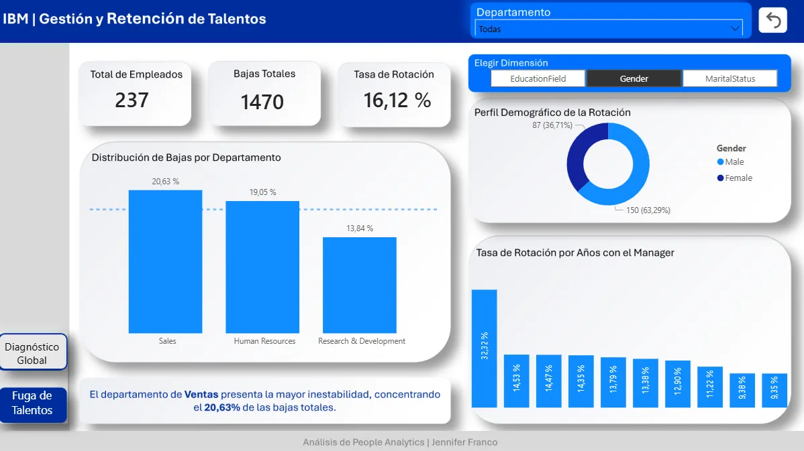
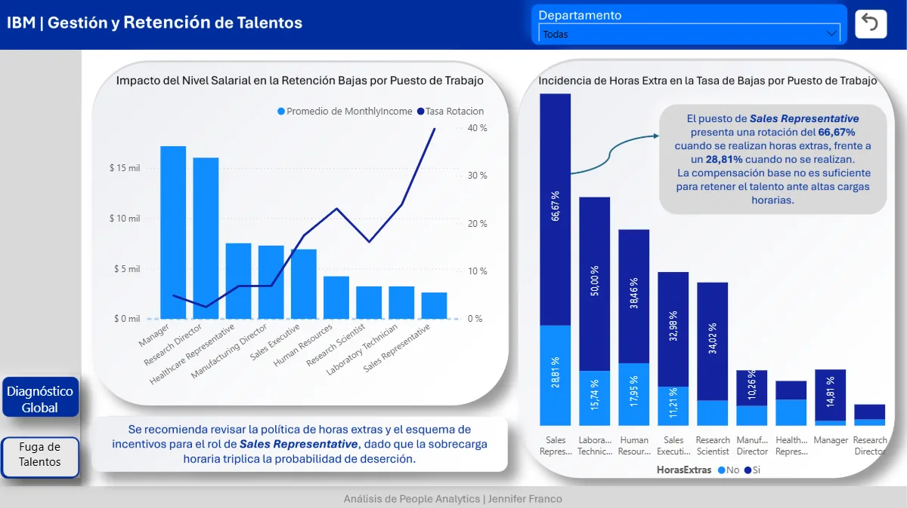
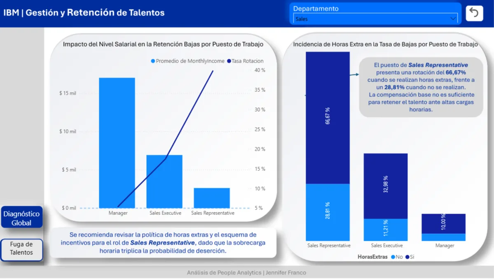
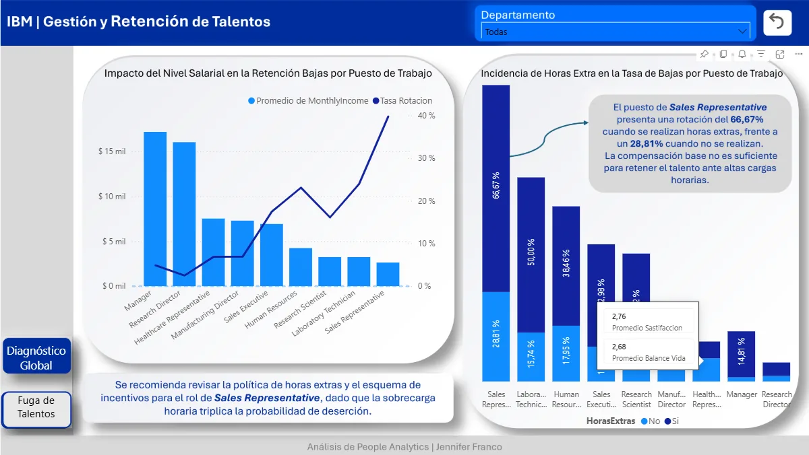

Volver a proyectos
Retención de talento
Un dashboard interactivo para encontrar dónde se concentra la rotación y qué factores la acompañan.
- 16,1 %rotación general de la empresa
- 20,6 %rotación en Ventas, el área más afectada
- 66,7 %rotación de Sales Representatives en sus primeros 2 años
- Tipo
- Proyecto personal
- Datos
- IBM HR Analytics: dataset ficticio y público (Kaggle)
- Herramientas
- Power BI (DAX), PowerPoint para el diseño del lienzo
El dashboard
Tiene dos páginas: un diagnóstico general y un análisis de la fuga de talento. Con botones de navegación y filtros cruzados, se puede pasar de la vista de toda la empresa al detalle de un puesto.




Hallazgos
- Un puesto concentra el problemaVentas es el área más afectada, y dentro de ella el foco está en Sales Representative, con tasas que duplican a otros roles.
- Salario y rotación van juntosLos salarios más bajos de la escala se asocian con más bajas, especialmente en puestos de entrada.
- Las horas extra agravan el riesgoLos Sales Representatives con salario bajo y horas extra son el grupo con más rotación.
- Los primeros 2 años son críticosLa rotación llega a su máximo en los primeros años, también en relación con el tiempo con el mismo manager.
Desarrollo técnico
- Variables binarias: transformé campos clave a 1 y 0 (por ejemplo, bajas y género) para simplificar los cálculos en DAX.
- Medidas DAX: armé medidas que responden a los filtros cruzados y mantienen estable el eje aun con muestras chicas, como el área de RRHH.
- Diseño: tooltips personalizados, una paleta de alto contraste para resaltar los puntos críticos y un lienzo diseñado en PowerPoint.
Propuesta
- Revisión salarial en Ventas: alinear el sueldo base de los Sales Representatives con el mercado.
- Límite de horas extra en el área comercial.
- Acompañamiento en los primeros 24 meses para intervenir antes de que se produzca la renuncia.
El análisis es descriptivo: muestra qué factores aparecen junto a la rotación, no prueba que la causen. Para confirmarlo, el paso siguiente sería un modelo predictivo o datos de entrevistas de salida.